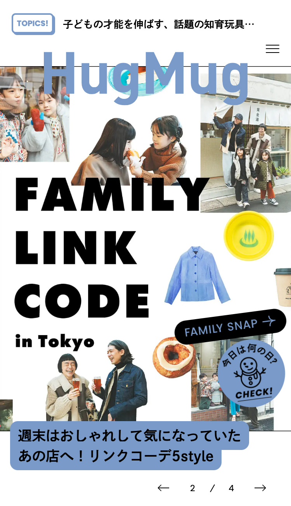
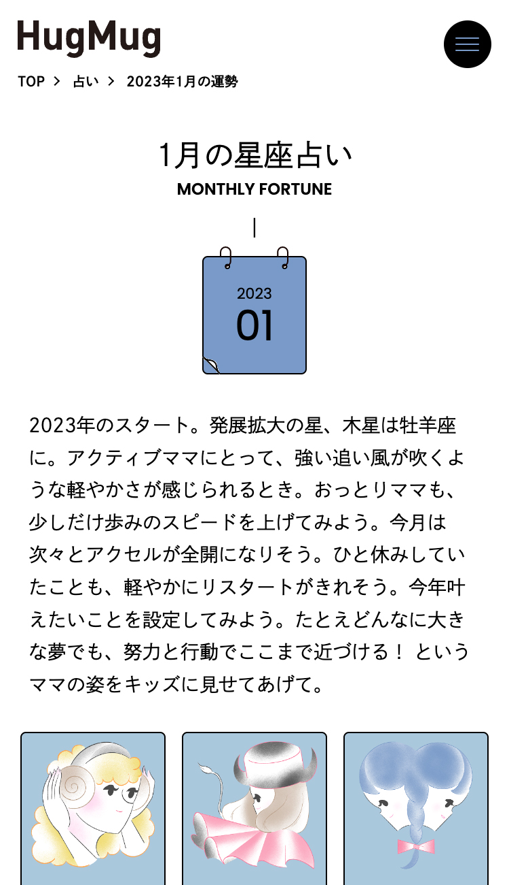
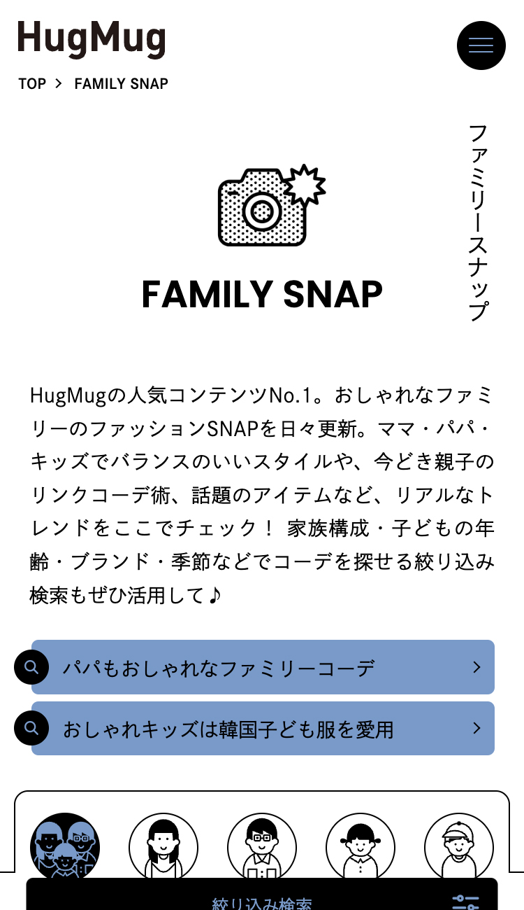
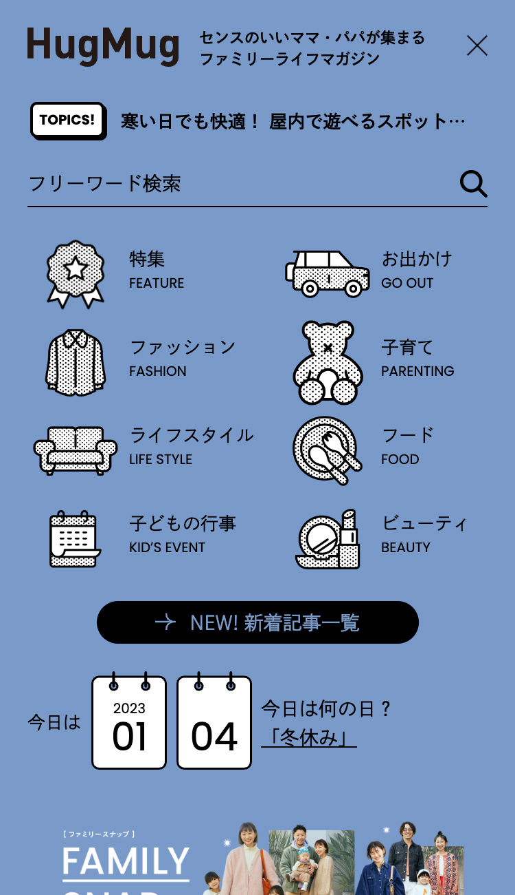
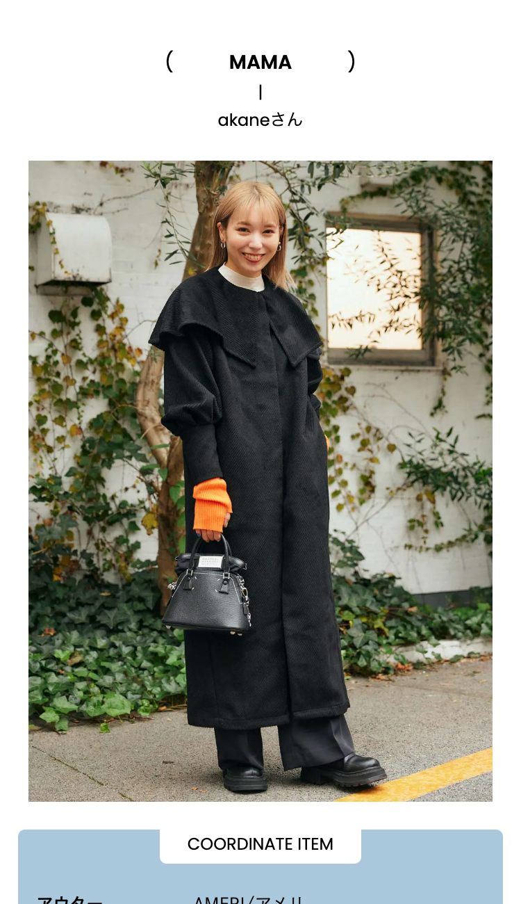
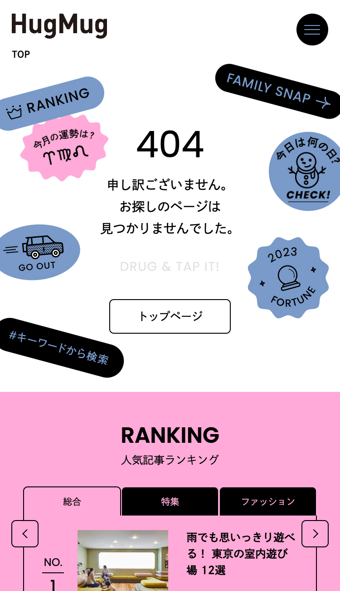
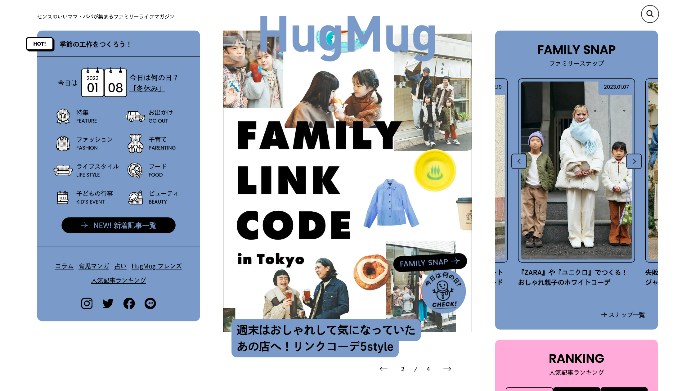
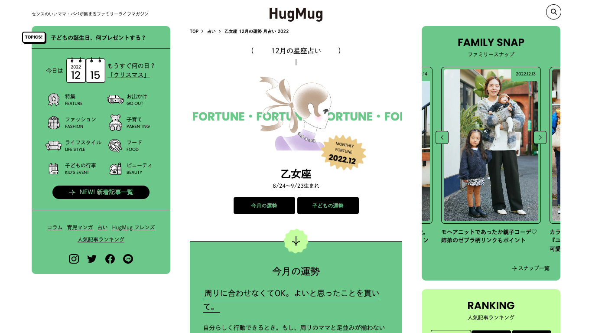
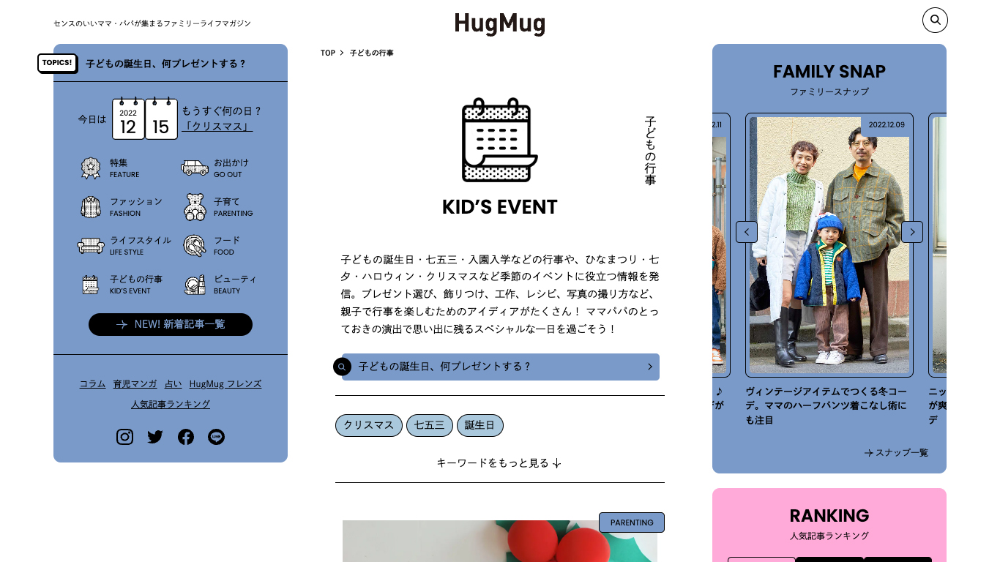

株式会社CCG TOさまが運営するwebメディア「HugMug」のリニューアルに携わりました。 ビジュアル面の課題として、同時に展開している誌面とのイメージの乖離が上がりました。イメージを統合すべく、誌面と担当するアートディレクターを別途迎え入れ、デザイン監修を受けつつ作成しました。
チームについて
社内：クリエイティブディレクター1人 / ディレクター1人 / デザイナー2人 / フロントエンドエンジニア2人
社外：アートディレクター1人 / エンジニア3人






記事のPV数をアップが課題としてあり、導線を強化。 「今日は何の日？」や、ホットトピックスなど、メディアから記事を提案するような仕組みを入れました。 また、404エラーでも、楽しくなるようなデザインに。



日々の育児だけではなく、ファッションのこと、家族の行事のこと、明日のお出かけ先のこと、いろいろなインスピレーションのもとになるメディアでありたいというご要望から。
あえてテーマカラーを決めず、一つのイメージに偏らないよう、セッションごとに配色が変わる仕組みを取り入れました。
また、特別なコンテンツはこちらのデザインも手がけているので、関連実績もご覧ください。